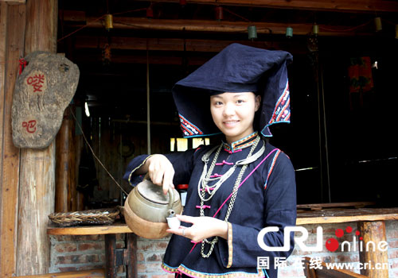
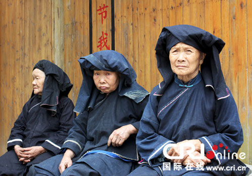
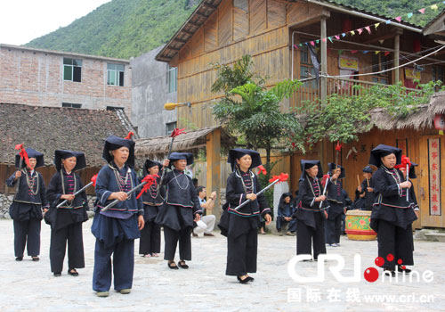
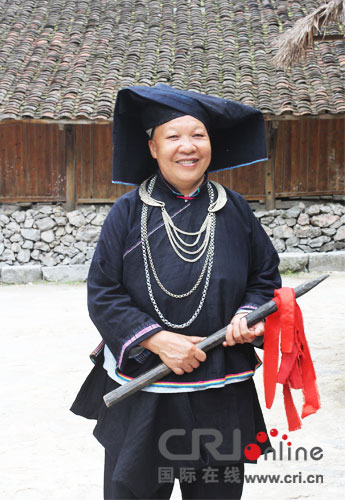

“黑衣壮”是壮族的一个支系，主要聚居在广西那坡县境内。他们以“黑枪舞”纪念先祖顽强不息的拼搏精神；以高亢的“过山腔”歌唱奔放而婉约的爱情生活；以黑为美的服饰倾向展示原始的生态美。近日，记者走进那坡黑衣壮，感受了黑衣壮人原汁原味的文化。
一进景区，便被这个古朴的村寨所吸引。黑衣壮至今仍然保留着穿黑色的传统，主要的原因是“以黑为美”的审美观深入人心。同时，穿戴上的实用性与款式大方朴素美观有机地结合完善了黑衣壮服饰文化的内涵。黑衣壮女装有上衣、大襟衣、大长筒裤、百褶黑裙、翘头绣花布鞋、衣边、袖口、裙边和头巾的四边用红、黄、蓝色丝线绣成波浪形的线条装饰，代表着喜庆、土地、水的意义。身上佩挂银质项链、项圈及手镯等，头上佩戴菱形头巾，宛如黑色蝴蝶。黑衣壮男装是前盖大襟上衣，以宽裤脚、大裤头的裤子相搭配。头缠数圈黑色头巾，腰间系一条红布或红绸的带子，以示驱鬼赶邪，兼有显示男人威武神勇气概之意。

相传在中国最早掌握纺织技术的是壮族人，黑衣壮至今都沿用着最古老的纺织术。妇女头巾也是用自己纺织染成的长条黑布折成，银簪、银链等物品的装饰更使她们黑中闪艳。黑衣壮妇女佩戴的银项圈，两端都制成鱼形状，有如双鱼对吻。双鱼对吻银项圈是黑衣壮妇女婚嫁时必备之物，说明黑衣壮有鱼图腾崇拜的信仰。
黑衣壮族，是一个能歌善舞的族群。屯子的中央有一新建的歌舞场，每逢有外来游客，黑衣壮人就穿着黑色的服装，踏着召唤的鼓点，从各自的干栏木楼里走出来，奔向村头简易的操场。这情景，就像一群群黑色的蝴蝶从树林里飞出，扑向灿烂绽开的花丛，整个村寨都变得美丽而又神奇。他们给游客表演献红舞、祝寿舞、黑枪舞、捶布舞和团结舞等舞蹈。这些舞蹈都源于他们的生活，有的反映他们抗击异族入侵的战争；有的反映他们接人待物的礼仪；有的反映他们对老人的尊敬；有的反映他们捶布做新衣、准备去见情人的喜悦。他们虽然没有经过专业训练，但他们用娴熟的舞步表达着一种古朴的情怀，大山的神韵通过他们灵动的舞姿被诠释得淋漓尽致。

再说说黑衣壮的饮食文化。酒是黑衣壮的血液，山歌是黑衣壮的灵魂，有酒就有山歌。“山歌出口不能收，杯中有酒不能留”是热情好客的本色。高海拔的石山缝中耕种出了赖以生存的资源：酸肉，腊肉，蔬菜等，也创造出各种生产工具：石磨、石臼、石槽……

“贝阿侬哎，壮家敬酒要唱歌嘞……”就在记者采访回程的车上，这个“以黑为美”的族群与其传说，仍伴着动人地民族乐声在脑海中不断回响。